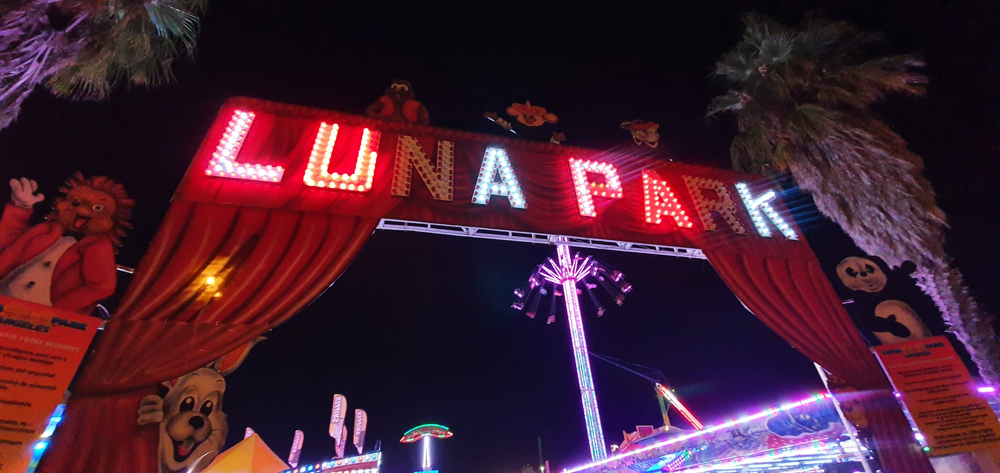

À proximité
Découvrez les commerces, activités et bonnes adresses situés autour de l’appartement pour profiter pleinement de votre séjour.
📄 Programme d'été
Retrouvez toutes les animations, concerts et événements de l’été :
📥 Télécharger le programme d'été 2025🛒 Commerces essentiels
- Vival Canet Sud – 7 min à pied
- Utile Canet Plage – 7 min à pied
- Boulangerie Tom Poupiz – 7 min à pied
- Pharmacie Canet Sud – 10 min à pied
- Intermarché SUPER Canet en Roussillon – 6 min en voiture
🎡 Activités incontournables à Canet

Aquarium Oniria
Un parcours immersif et spectaculaire à travers les océans. Parfait pour les familles et les amoureux de la mer.
Voir le site
Aire de jeux
Aire de jeux à 5 min à pied de l'appartement en forme de bateau face à la mer, accessible dès l'âge de 2 ans, sur un espace sécurisé sous la responsabilité des parents.
Voir le site
Port de Canet-en-Roussillon
Un port de plaisance animé, idéal pour se promener, admirer les bateaux, profiter des restaurants en bord d’eau ou partir en excursion en mer. Ambiance chaleureuse le jour comme le soir.
Voir le site
Mini‑Golf de Canet
Un parcours ludique et coloré situé en bord de mer, idéal pour une activité en famille ou entre amis. Accessible dès le plus jeune âge, il offre un moment convivial dans une ambiance estivale.
Voir le site
Bowling – Mini‑Golf Fluo – Laser Game
Un espace de loisirs complet regroupant bowling, mini‑golf fluo et laser game. Parfait pour une sortie en famille ou entre amis, avec une ambiance fun et dynamique. Idéal pour s’amuser en soirée ou lors des journées moins ensoleillées.
Voir le site
Clap Ciné Canet
Le cinéma de Canet propose les dernières sorties, des films pour toute la famille et des séances en soirée. Une excellente idée de sortie pour se détendre après une journée plage ou par temps couvert.
Voir le site🍽️ Restaurants recommandés

Restaurant La Paillote
Un restaurant en bord de mer apprécié pour son ambiance détendue, ses plats méditerranéens et ses cocktails au coucher du soleil. Idéal pour un déjeuner les pieds dans le sable ou un dîner face à la mer.
Voir le site
La Marée de Joe
Un restaurant réputé de Canet Sud, connu pour ses poissons frais, ses fruits de mer et ses grillades. L’ambiance est conviviale, le service chaleureux et les plats généreux. Une excellente adresse pour déguster des produits de la mer dans un cadre détendu.
Voir le site
Restaurant Gang de Pirates
Un restaurant familial à l’ambiance pirate, idéal pour les enfants comme pour les adultes. Décor immersif, animations et plats généreux : une sortie originale et conviviale à deux pas de la mer.
Voir le site🎡 Loisirs proche de Canet

Luna Park d’Argelès-sur-Mer
Le plus grand parc d’attractions de la région, ouvert tout l’été. Manèges à sensations, grande roue, stands de jeux, ambiance festive et nocturne : une sortie incontournable pour les familles et les amateurs de fête foraine. Situé à seulement 20 minutes de Canet.
Voir le site🧺 Marchés

Canet-en-Roussillon
Un marché typique et animé où l’on retrouve produits locaux, poissons frais et spécialités catalanes dans une ambiance conviviale.
Voir le site
Argelès-sur-Mer
Le marché d’Argelès-sur-Mer est l’un des plus grands et des plus animés du littoral. On y trouve des producteurs locaux, des étals colorés, des spécialités catalanes, de l’artisanat et une ambiance estivale très conviviale. Parfait pour flâner en famille et découvrir les saveurs de la région.
Voir le site
Barcarès
Le marché du Barcarès est apprécié pour son ambiance conviviale et ses nombreux stands variés. Entre produits locaux, poissons frais, artisanat et spécialités méditerranéennes, c’est un lieu idéal pour profiter de l’atmosphère du littoral et faire une belle balade en bord de mer.
Voir le site🎡 Des randonnées jusqu'à une heure de Canet

Randonnée des Cascades de Vernet-les-Bains
Une superbe balade en pleine nature, alternant passages ombragés, petits ponts et points de vue sur plusieurs cascades. Le sentier est agréable, rafraîchissant et accessible, parfait pour une sortie détente à moins d’une heure de Canet.
Voir le site
Chapelle Notre‑Dame de Vie & Grottes
Une belle randonnée mêlant patrimoine et nature, avec un sentier agréable menant à la chapelle perchée et à plusieurs petites grottes. Le parcours offre de superbes vues sur la vallée et une ambiance paisible, idéale pour une sortie découverte.
Voir le site
Gorges de la Guillera, Château & Village
Une randonnée variée et pleine de charme, alternant passages dans les gorges, découverte d’un ancien château et traversée d’un village typique. Le parcours offre de beaux points de vue et une ambiance authentique, idéale pour une sortie nature et patrimoine.
Voir le site